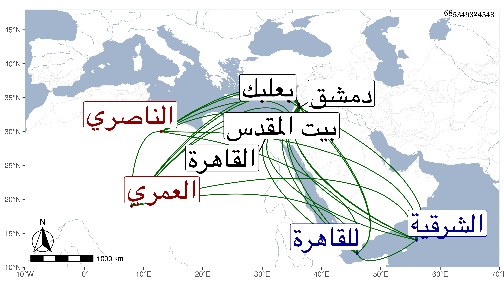

0902Sakhawi.DawLamic.ITO20230111-ara1.EIS1600.685349324543
Biography ID: 685349324543
720
قراجا العمري الناصري فرج . أقام في الجندية إلى أن استقر به الظاهر جقمق وهو خاصكي في ولاية القاهرة ثم أضاف إليها إمرة عشرة ثم عزله عن الولاية بمنصور بن الطبلاوي ، وحج رجبيا فلم تحمد سيرته ، وآل أمره إلى النفي إلى البلاد الشامية ثم أنعم عليه بتقدمة في دمشق ثم عيد وولي في سنة ثلاث وخمسين نيابة القدس وأنعم عليه بمال فلم تطل مدته بل عزل وحبس بقلعة دمشق مدة ثم أفرج عنه واستمر هناك بطالا ثم طلب هناك للقاهرة إلى أن ولاه المنصور نيابة بعلبك ثم عزله قبل خروجه وولاه كشف الشرقية وعزله أيضا بعد أيام وقدم في أثناء الركوب عليه فكان ممن حضر مع إينال فلما تسلطن أعطاه إمرة عشرة وصار من رءوس النوب ثم رأس نوبة ثاني في أوائل أيام خشقدم ثم أخرجه إلى دمشق على تقدمة بها ضعيفة فدام بها حتى مات في مستهل صفر سنة سبعين وقد ناهز الثمانين ، ووهم من أرخه في المحرم ، وكان طوالا أسمر مذكورا بالشجاعة مع انهماك في الخمر سامحه الله .
